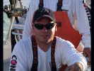

About the Team: Young Guns Sportfishing Team is the result of hard work, determination and positive thinking.
Members of the team also competed in these other events in recent years:
- Mid Atlantic 500,000, Cape May, NJ
- White Marlin Open, Ocean City, MD
- South Jersey Shark Tournament, Cape May, NJ
- Hi-Mar Fall Striper Tournament, Atlantic Highlands, NJ
- Jersey Coast Shark Anglers, Manasquan, NJ
- Mako Mania, Manasquan, NJ
- South Jersey Offshore Open, Cape May, NJ
- 2003 American Striper Association Tournament Trail
- 2004 American Striper Association Tournament Trail
- 2005 American Striper Association Tournament Trail
- Brett Bailey Mako Rodeo
- Beach Haven Marlin Tuna Club Invitational
Young Guns Favorites:
- Marine Centers
- Internet Forums
- Tackle & Equipment
- Bait
- Weather Reports
- Buoy Sites
- Ocean Water Temp. Services
- Local Clubs
|
Captain: Nicholas Veneziale
Nick currently lives in Lansdale, PA but his home fishing port is out of Waretown, NJ where he has fished the Barnegat waters for over 15 years. After graduating college he and his father purchased their first of three Shamrocks and have been fishing them aggressively over the past 5 years. Due to his success, he now is Captain of the Young Guns Sportfishing Team running our new 26 ft NorthCoast.
Team Member: Marc A. Priest
Marc, a Philadelphia native, spent his summers fishing the Cape May waters for flounder and blue fish and has graduated to hunting for striped bass, tuna, sharks and marlin. He currently runs a 22 ft Robalo, Reelality Bites out of Wildwood, NJ.
Team Member: George Berosh
George is from Gilbertsville, PA and when not fishing with the team he spends his free weekends fishing out of the Indian River Inlet, Delaware on his 25 ft Grady White, Knotbad II. When George is not on the hunt for “Martha”, the prize winning striped bass he enjoys searching the blue waters for Tuna, Marlin and sharks. |